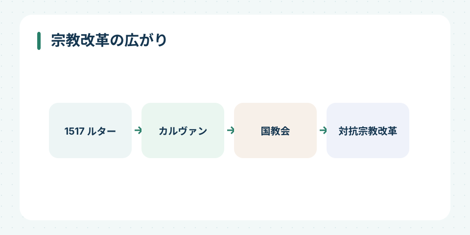

世界史 / UNIVERSITY ENTRANCE EXAM
宗教改革の流れ｜ルターとカルヴァンを比較
16世紀の宗教改革は信仰の問題だけでなく、国家権力や印刷技術、ヨーロッパ社会の変化とも関わりました。人物ごとの主張と展開を比較します。
史
このページで学べること
1517年から対抗宗教改革まで。要点を読んだら、最後の確認問題で理解度をチェックしましょう。
POINT 01
1517年、ルターの問題提起

マルティン・ルターは1517年に「九十五か条の論題」を示し、贖宥状（免罪符と呼ばれることもある）の販売などを批判しました。信仰による義認や聖書の権威を重視した点が重要です。
POINT 02
カルヴァンと改革の広がり
ジャン・カルヴァンはジュネーヴを拠点に改革を進め、予定説などを説きました。イングランドでは政治的事情も絡んで国王を首長とする国教会が成立します。改革の方向は地域によって一様ではありません。
| 人物・動き | 要点 |
|---|---|
| ルター | 信仰義認・聖書重視 |
| カルヴァン | 予定説・ジュネーヴで改革 |
| イングランド国教会 | 国王の宗教上の主導権 |
POINT 03
カトリック側の改革
カトリック教会もトリエント公会議などを通して教義と制度の再確認・改革を進めました。イエズス会は布教と教育に重要な役割を果たしました。
宗教改革は「ルターが教会を批判」で終わらず、諸宗派の成立と国家・社会の変容までセットで理解します。
PRACTICE
確認問題に挑戦！
全3問。答えを考えてから「解答と解説を見る」を押してね。
Q01
ルターが九十五か条の論題を提示した年は？
解答と解説を見る ＋
正解・解答例
1517年
宗教改革の象徴的な出発点。
Q02
予定説で知られる改革者は？
解答と解説を見る ＋
正解・解答例
カルヴァン
ジュネーヴで活動しました。
Q03
カトリック改革に重要な公会議は？
解答と解説を見る ＋
正解・解答例
トリエント公会議
教義の再確認などが進められました。
今日のまとめ
ルター＝信仰義認、カルヴァン＝予定説、カトリック側＝公会議と改革。
ここまで読めたら、ひと区切り。
理解できたら学習済みにチェックして、次の記事へ。
記事について
StudyMasterの無料学習コンテンツです。AIを補助的に用いて作成しています。例題・解答は公開前にご自身でも確認してください。内容に誤りがある場合は、学校の教科書などと照合してください。
公開・更新：2026年11月12日